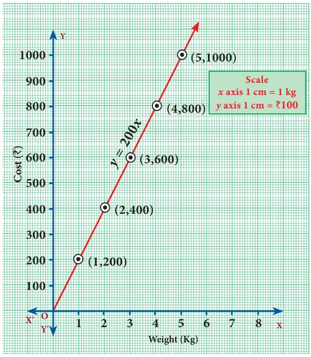
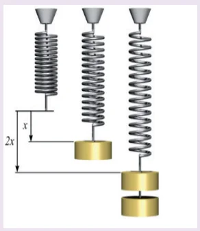
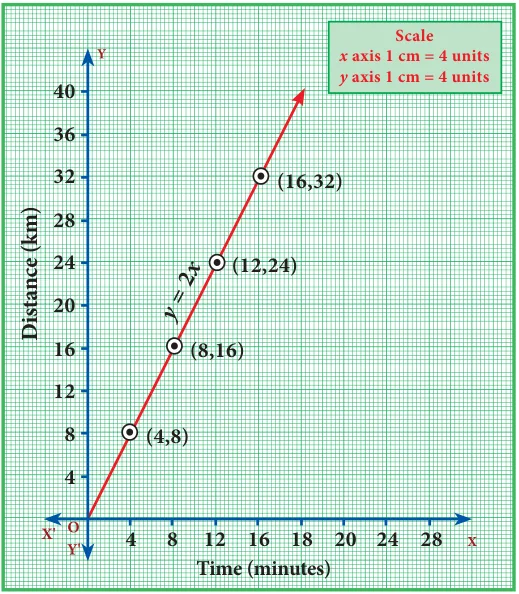
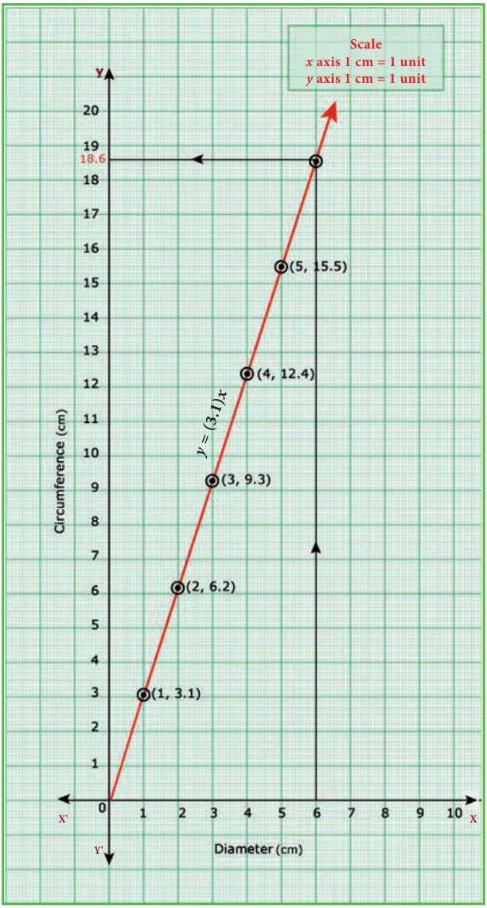
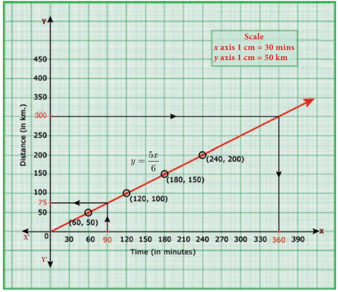
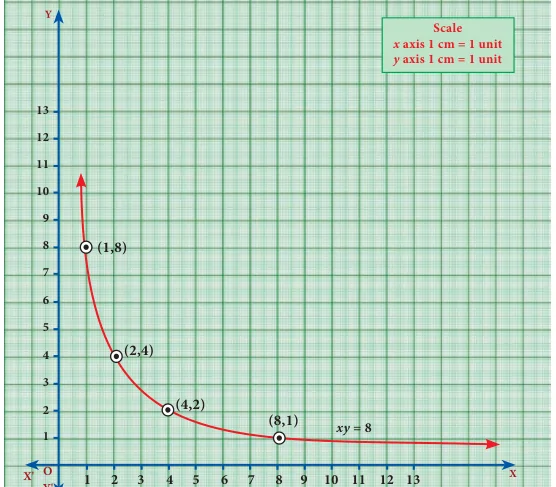
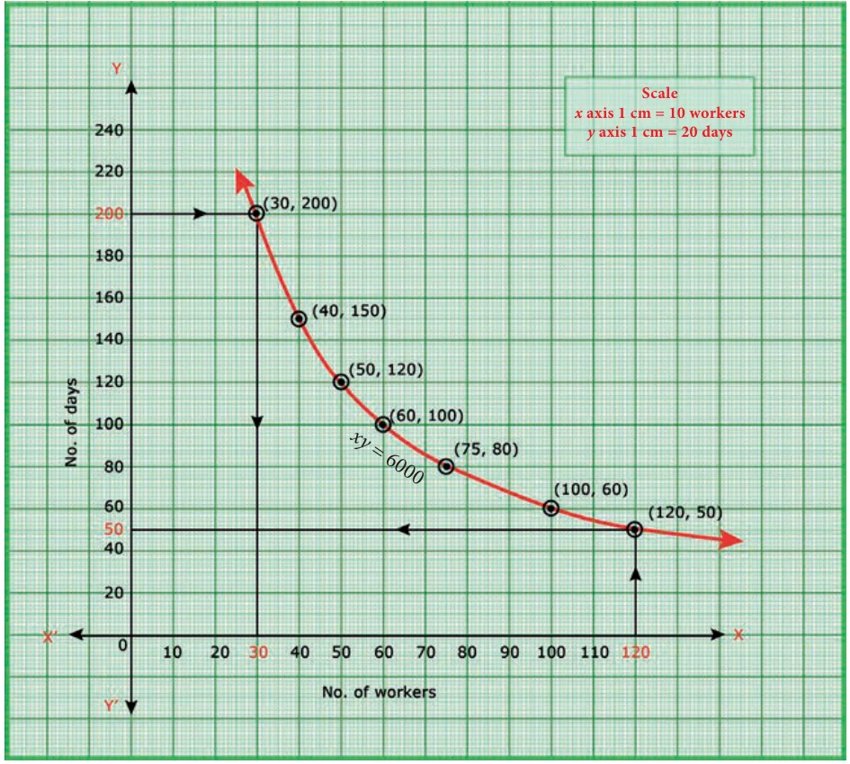
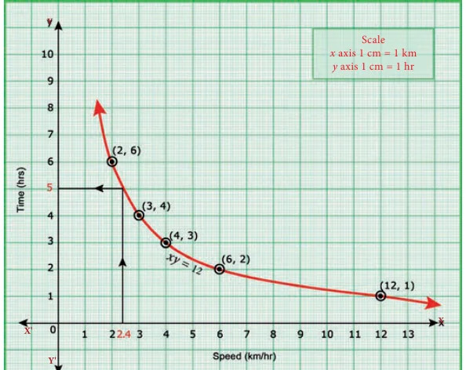

Variables:
Every day, Harini travels from her home, cycling at a uniform speed, to reach her school. You can state this mathematically by an equation \(d = rt\), where \(d\) stands for distance travelled at any time \(t\) and \(r\) is the uniform rate of speed.
Suppose you want to find the distance covered by her at a speed of 20 \(km\) per hour when she has cycled for fifteen minutes.
\(r = 20\) and \(t = \frac{1}{4}\) (how?) and we find \(d\) to be \(rt = 20 \times \frac{1}{4} = 5\) km.
Here, we say that \(d\) is a dependent variable and \(r\) and \(t\) are independent variables. As the distance \(d\) travelled depends upon the rate \(r\) and time used \(t\).
Thus, an independent variable represents a quantity that is manipulated in a given situation where as a dependent variable represents a quantity whose value depends on how the independent variable is manipulated.
Equations that describe the relationship between two variables in a sentence express the variation between those variables.
Consider the monthly income of Server Suresh who works in a hotel where he is paid ₹ 50 per hour.
There are two variables here. One is the monthly income and the other is the number of hours he works. Which among the two is the independent variable?
Constants:
You know how to calculate the area of a circle when the length of its radius is given. If the area required is \(A\) and the length of radius is \(r\), then the formula
\(A = \pi r^2\)
gives the required result. Here, the area A depends upon the length \(r\) of radius; thus A is a dependent variable and r is the independent variable. But what can we say about \(\pi\)? It is a number that remains the same in all the situations. It is constant.
A constant is a quantity that assumes a fixed value throughout in a specific mathematical context.
Two types of variation:
When two things are in proportion, there is a relation between them, due to which, if the value of one of them changes, the value of the other also changes. We look into two types of variations here:
- Direct variation
- Indirect variation.
(i) Direct variation:
When you go to the market, to buy more apples, you’ll have to spend more amount of money. If the cost of one kg of apples is ₹ 200, you pay as follows:
| Weight (Kg) | 1 | 2 | 3 | 4 | 5 |
|---|---|---|---|---|---|
| Cost (₹) | 200 | 400 | 600 | 800 | 1000 |

You find that \(\dfrac{1}{200} = \dfrac{2}{400} = \dfrac{3}{600} = \dfrac{4}{800} = \dfrac{5}{1000} = \ldots\)
This kind of proportionate variation is known as Direct variation. Here to find the cost, the weight is multiplied by the constant 200.
If we denote the variable weight as \(x\) and the variable cost as \(y\) we can express this algebraically as \(y = 200x\). The multiplying constant here is 200.
If \(\dfrac{y}{x} = k\) where \(k\) is a positive number (a constant), then \(x\) and \(y\) are said to vary directly. Here, \(k\) is known as the constant of proportionality.
Do You Know?

Mathematics in real life: This figure shows that doubling the force doubles the displacement. This is a consequence of what is known as Hooke’s law. It states \(F = kx\) where \(F\) is the force needed to produce a displacement of \(x\) in the position of a spring. To double the displacement, you double the force on the spring; the constant of proportionality \(k\) depends on the stiffness of the spring. So this is an example of a direct proportionality.
Visualising Direct variation:
To identify direct variation is to look at the equation and determine if it is of the form \(y = kx\), where \(k\) is the constant of proportionality. Thus, an equation like \(y = 5x\) will always indicate direct proportion among variables.
Thinking Corner
What can you say if the variables \(x\) and \(y\) are related by the equation \(3y - 7x = 0\)? It also indicates direct variation. How? Think about it. In that case, what is the constant of proportionality?
Observe this graph:
The distance travelled and the time taken are proportional, but how do we know that?

Note that
- The graph is a straight line.
- The line passes through the origin. When both of these features are present we know that the two quantities on the graph must be directly proportional.
Do you see this in the graph?
| Time (in minutes) | 4 | 8 | 12 | 16 |
|---|---|---|---|---|
| Distance (in km) | 8 | 16 | 24 | 32 |
If one variable doubles, the other also doubles. From this you can see the relation \(d = rt\) and it is easy to guess the constant of proportionality.
Example 3.47
Varshika drew 6 circles with different sizes. Draw a graph for the relationship between the diameter and circumference (approximately related) of each circle as shown in the table and use it to find the circumference of a circle when its diameter is 6 cm.
| Diameter (x) cm | 1 | 2 | 3 | 4 | 5 |
|---|---|---|---|---|---|
| Circumference (y) cm | 3.1 | 6.2 | 9.3 | 12.4 | 15.5 |
Solution

From the table, we found that as \(x\) increases, \(y\) also increases. Thus, the variation is a direct variation.
Let \(y = kx\), where \(k\) is a constant of proportionality.
From the given values, we have,
\(k = \dfrac{3.1}{1} = \dfrac{6.2}{2} = \dfrac{9.3}{3} = \dfrac{12.4}{4} = \ldots = 3.1\)
When you plot the points (1, 3.1) (2, 6.2) (3, 9.3), (4, 12.4), (5, 15.5), you find the relation \(y = (3.1)x\) forms a straight-line graph.
Clearly, from the graph, when diameter is 6 cm, its circumference is 18.6 cm.
Example 3.48
A bus is travelling at a uniform speed of 50 km/hr. Draw the distance-time graph and hence find
- the constant of variation
- how far will it travel in 90 minutes?
- the time required to cover a distance of 300 km from the graph.
Solution
Let \(x\) be the time taken in minutes and \(y\) be the distance travelled in km.
| Time taken x (in minutes) | 60 | 120 | 180 | 240 |
|---|---|---|---|---|
| Distance y (in km) | 50 | 100 | 150 | 200 |
(i) Observe that as time increases, the distance travelled also increases. Therefore, the variation is a direct variation. It is of the form \(y = kx\).
Constant of variation
\(k = \dfrac{y}{x} = \dfrac{50}{60} = \dfrac{100}{120} = \dfrac{150}{180} = \dfrac{200}{240} = \dfrac{5}{6}\)
Hence, the relation may be given as
\(y = kx \quad\Rightarrow\quad y = \dfrac{5}{6}x\)

(ii) From the graph, \(y = \dfrac{5x}{6}\), if \(x = 90\), then \(y = \dfrac{5}{6} \times 90 = 75\) km
The distance travelled for 90 minutes is 75 km.
(iii) From the graph, \(y = \dfrac{5x}{6}\), if \(y = 300\) then \(x = \dfrac{6y}{5} = \dfrac{6}{5} \times 300 = 360\) minutes (or) 6 hours.
The time taken to cover 300 km is 360 minutes (or) 6 hours.
(ii) Indirect variation:
The distance between Chennai and Madurai is (nearly) 480 km. Think of a train that starts from Chennai and travels towards Madurai. As it increases speed more and more, the time taken for travel will decrease. In the following table speed \(v\) is given in km and time \(t\) is given in hours:
| Speed (v) (km/hr) | 30 | 40 | 60 | 80 |
|---|---|---|---|---|
| Time (t) (hours) | 16 | 12 | 8 | 6 |
From the table it is clear that if you travel at a slower speed, the time increases and if the train is faster, the time decreases. You find, \(30 \times 16 = 40 \times 12 = 60 \times 8 = 80 \times 6\), which tells that \(vt\) is a constant. Here \(vt = 480\). In such a case, we say the variables \(v\) and \(t\) are inversely proportional.
Observe that the graph of equation like \(vt = 480\) will not be a straight line. Inverse variation implies that as one variable increases, the other variable decreases.
Visualising Indirect variation:

Look at the adjacent graph. It is a graph of the equation \(xy = 8\). We have taken only the positive values of \(x\), \(y\).
The table of values is:
| \(x\) | 1 | 2 | 4 | 8 |
|---|---|---|---|---|
| \(y = \frac{8}{x}\) | 8 | 4 | 2 | 1 |
This is an illustration of inverse variation or indirect variation. The graph is a part of a curve called Rectangular Hyperbola.
Example 3.49
A company initially started with 40 workers to complete the work by 150 days. Later, it decided to fasten up the work increasing the number of workers as shown below.
| Number of workers (\(x\)) | 40 | 50 | 60 | 75 |
|---|---|---|---|---|
| Number of days (\(y\)) | 150 | 120 | 100 | 80 |
- Graph the above data and identify the type of variation.
- From the graph, find the number of days required to complete the work if the company decides to opt for 120 workers?
- If the work has to be completed by 200 days, how many workers are required?
Solution
(i)

From the given table, we observe that as \(x\) increases, \(y\) decreases. Thus, the variation is an inverse variation.
Let \(y = \dfrac{k}{x}\)
\(\Rightarrow xy = k,\ k > 0\) is called the constant of variation.
From the table, \(k = 40 \times 150 = 50 \times 120 = \ldots = 75 \times 80 = 6000\)
Therefore, \(xy = 6000\)
Plot the points (40,150), (50,120), (60,100) of (75,80) and join to get a free hand smooth curve (Rectangular Hyperbola).
(ii) From the graph, the required number of days to complete the work when the company decides to work with 120 workers is 50 days.
Also, from \(xy = 6000\) if \(x = 120\), then \(y = \dfrac{6000}{120} = 50\)
(iii) From the graph, if the work has to be completed by 200 days, the number of workers required is 30.
Also, from \(xy = 6000\) if \(y = 200\), then \(x = \dfrac{6000}{200} = 30\)
Example 3.50
Nishanth is the winner in a Marathon race of 12 km distance. He ran at the uniform speed of 12 km/hr and reached the destination in 1 hour. He was followed by Aradhana, Jeyanth, Sathya and Swetha with their respective speed of 6 km/hr, 4 km/hr, 3 km/hr and 2 km/hr. And, they covered the distance in 2 hrs, 3 hrs, 4 hrs and 6 hours respectively.
Draw the speed-time graph and use it to find the time taken to Kaushik with his speed of 2.4 km/hr.
Solution
Let us form the table with the given details.
| Speed \(x\) (km/hr) | 12 | 6 | 4 | 3 | 2 |
|---|---|---|---|---|---|
| Time \(y\) (hours) | 1 | 2 | 3 | 4 | 6 |

From the table, we observe that as \(x\) decreases, \(y\) increases. Hence, the type is inverse variation.
Let \(y = \dfrac{k}{x}\)
\(\Rightarrow xy = k,\ k > 0\) is called the constant of variation.
From the table \(k = 12 \times 1 = 6 \times 2 = \ldots = 2 \times 6 = 12\)
Therefore, \(xy = 12\).
Plot the points (12,1), (6,2), (4,3), (3,4), (2,6) and join these points by a smooth curve (Rectangular Hyperbola).
From the graph, we observe that Kaushik takes 5 hrs with a speed of 2.4 km/hr.
Note
Already we learned that, the linear equation of straight line is \(y = mx + c\), where \(m\) is the slope of the straight line and \(c\) is the \(y\) – intercept. Also, the equation reduces to \(y = mx\) when the straight line passes through origin. As the graph of direct variation refer to straight line and its general form is \(y = kx\), we can conclude that ‘constant of proportionality’ is nothing but ‘slope’ of its straight line.